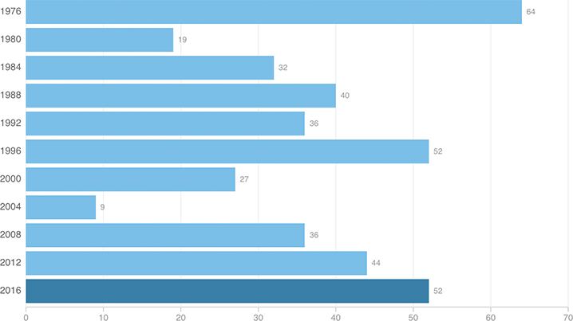

The Partisan Gap Among Hispanics Could Be Bigger Than Usual This Year
Latinos tend to vote more Democratic than Republican — in all of these elections, they did. Here is the percentage-point margin by which they voted Democratic in presidential elections since 1972. According to recent polling, this election could feature the largest gap among Hispanics since 1996, or potentially since 1976.
